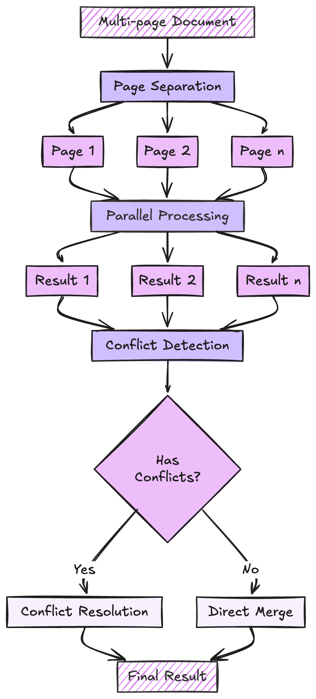

PAGINATE Strategy¶
The PAGINATE strategy processes multi-page documents by handling each page independently and then intelligently merging the results, including sophisticated conflict resolution when pages contain overlapping information.

How It Works¶
Page Separation
- Identifies individual pages
- Preserves page metadata
- Maintains document structure
Parallel Processing
- Each page processed independently
- Uses full context window per page
- Handles page-specific content
Result Collection
- Gathers results from all pages
- Validates individual page results
- Prepares for merging
Conflict Resolution
- Detects overlapping information
- Resolves conflicts using confidence scores
- Maintains data consistency
Usage¶
from extract_thinker import Extractor
from extract_thinker.models.completion_strategy import CompletionStrategy
extractor = Extractor()
extractor.load_llm("gpt-4")
result = extractor.extract(
file_path,
ResponseModel,
completion_strategy=CompletionStrategy.PAGINATE
)
Benefits¶
- Cheaper: Reduced parallel context window would be cheaper than a long Concatenate Strategy
- Parallel Processing: Pages can be processed independently
- Conflict Resolution: Smart merging of results from different pages
- Scalability: Handles documents of any length
- Accuracy: Each page gets full context window attention
Implementation Details¶
Pagination Handler Implementation
The PaginationHandler implements the PAGINATE strategy:
import copy
from typing import Any, Dict, List, Optional, get_origin, get_args, Union
from pydantic import BaseModel, Field
from instructor.exceptions import IncompleteOutputException
from extract_thinker.completion_handler import CompletionHandler
from extract_thinker.utils import encode_image, json_to_formatted_string, make_all_fields_optional
import yaml
from concurrent.futures import ThreadPoolExecutor, as_completed
class ConflictResolution(BaseModel):
resolved_fields: Dict[str, Dict[str, Any]] = Field(
description="Dictionary of resolved field values with confidence scores",
default_factory=dict
)
class PaginationHandler(CompletionHandler):
def __init__(self, llm):
super().__init__(llm)
def _make_hashable(self, item: Any) -> Any:
"""Recursively convert a value to something hashable."""
if isinstance(item, dict):
return tuple(sorted((k, self._make_hashable(v)) for k, v in item.items()))
elif isinstance(item, list):
return tuple(self._make_hashable(x) for x in item)
return item
def handle(self,
content: List[Dict[str, Any]],
response_model: type[BaseModel],
vision: bool = False,
extra_content: Optional[str] = None) -> Any:
# Make fields optional to allow partial results
response_model_optional = make_all_fields_optional(response_model)
# Process pages in parallel
results = []
with ThreadPoolExecutor() as executor:
futures = []
for page in content:
# Build messages for each page
messages = self._build_messages(page, vision)
if extra_content:
self._add_extra_content(messages, extra_content)
# Submit page processing task
future = executor.submit(
self._process_page,
messages,
response_model_optional
)
futures.append(future)
# Collect results as they complete
for future in as_completed(futures):
try:
result = future.result()
results.append(result)
except Exception as e:
# Log error but continue processing other pages
print(f"Error processing page: {str(e)}")
if not results:
raise ValueError("No valid results obtained from any page")
# Pair up the pages with their results for context
pages_data = list(zip(content, results))
return self._merge_results(results, response_model, pages_data)
def _process_page(self, messages: List[Dict[str, Any]], response_model: type[BaseModel]) -> Any:
"""Process a single page with retry logic for incomplete responses"""
try:
return self.llm.request(messages, response_model)
except IncompleteOutputException as e:
# Handle partial response
partial_result = self._handle_partial_response(e, messages, response_model)
partial_dict = partial_result.model_dump()
if self._has_conflicts(partial_dict, response_model):
# We'll resolve conflicts later after merging all pages
return partial_result
return partial_result
def _merge_results(self, results: List[Any], response_model: type[BaseModel], pages_data: List[Any]) -> Any:
"""Merge results from multiple pages into a dictionary, detect conflicts, resolve if needed, then return model."""
# Collect all values for each field
field_values = {}
for _, result in pages_data:
result_dict = result.model_dump()
for field_name, field_value in result_dict.items():
field_values.setdefault(field_name, []).append(field_value)
# Merge fields
merged = {}
for field_name, values in field_values.items():
# Get the annotated type from the response model
field_type = response_model.model_fields[field_name].annotation if field_name in response_model.model_fields else None
non_null_values = [v for v in values if v is not None]
if field_type and get_origin(field_type) is list:
# Merge list fields using a more sophisticated approach
merged_list = self._merge_list_field(field_name, values, field_type)
merged[field_name] = merged_list
else:
# Scalar field handling
if len(non_null_values) == 0:
# If the field is expected to be a string, default to an empty string.
if field_type == str or (get_origin(field_type) is Union and str in get_args(field_type)):
merged[field_name] = ""
else:
continue
else:
# Build a mapping from the hashable version of each candidate to the original candidate.
distinct_map = {}
for candidate in non_null_values:
key = self._make_hashable(candidate)
if key not in distinct_map:
distinct_map[key] = candidate
distinct_values = list(distinct_map.values())
if len(distinct_values) == 1:
merged[field_name] = distinct_values[0]
else:
# Store conflicts in a special structure
merged[field_name] = {
"_conflict": True,
"candidates": distinct_values
}
# Check for conflicts and resolve if necessary
if self._has_conflicts(merged, response_model):
merged = self._resolve_conflicts(merged, response_model, pages_data, field_values)
# Clean merged dictionary to ensure it's compatible with the response model
merged = self._clean_merged_dict(merged, response_model)
# Filter out any keys with a None value,
# now every required field (e.g., a string like "thinking") will be non-null.
merged = {k: v for k, v in merged.items() if v is not None}
return response_model(**merged)
def _merge_list_field(self, field_name: str, values: List[Any], field_type: Any) -> List[Any]:
"""
Merge list fields from multiple pages. If the list is a list of Pydantic models,
we try to merge based on a unique key field (e.g. `country` for countries, `region` for regions).
If it's not a list of models or no unique key is found, we just concatenate and
rely on conflict resolution later.
"""
# Flatten all lists
flattened = []
for v in values:
if isinstance(v, list):
flattened.extend(v)
elif v is not None:
flattened.append(v)
# Attempt to detect if we're dealing with a Pydantic model list
args = get_args(field_type)
if args:
model_type = args[0]
if hasattr(model_type, '__fields__'):
# We have a Pydantic model class in the list
# Identify a unique key to merge on.
candidate_keys = ['country', 'region', 'id', 'name']
unique_key = None
for ck in candidate_keys:
if ck in model_type.__fields__:
unique_key = ck
break
if unique_key:
# Merge by unique key using case-insensitive comparison
merged_by_key = {}
for item in flattened:
if hasattr(item, 'model_dump'):
item_dict = item.model_dump()
else:
item_dict = item
key_val = item_dict.get(unique_key)
if key_val is not None:
normalized_key = str(key_val).lower()
if normalized_key in merged_by_key:
merged_by_key[normalized_key] = self._merge_two_models(
merged_by_key[normalized_key],
item_dict
)
else:
merged_by_key[normalized_key] = item_dict
else:
# If no unique key found for this item, just store it uniquely
merged_by_key[f"no_key_{len(merged_by_key)}"] = item_dict
return list(merged_by_key.values())
else:
# No unique key found, just return flattened list
return flattened
else:
# Not a pydantic model list
return flattened
else:
# Not a parametrized list type
return flattened
def _merge_two_models(self, existing: Dict[str, Any], new: Dict[str, Any]) -> Dict[str, Any]:
"""
Merge two dictionaries representing the same entity. For scalar values,
prefer the existing if both are non-null or prefer non-null values.
For lists, combine them.
"""
merged = existing.copy()
for k, v in new.items():
if k not in merged or merged[k] is None:
merged[k] = v
else:
if isinstance(merged[k], list) and isinstance(v, list):
# Extend lists
merged[k].extend(v)
# If there's a scalar conflict, we can keep the first non-null,
# or implement custom conflict handling here.
# For now, do nothing if both have a value, keep existing.
return merged
def _clean_merged_dict(self, merged: Dict[str, Any], response_model: type[BaseModel]) -> Dict[str, Any]:
"""Clean the merged dictionary after conflict resolution to remove any leftover special structures
and ensure values are compatible with the response model."""
cleaned = {}
for field_name, field_value in merged.items():
# If there's still a conflict structure, remove it or handle it
if isinstance(field_value, dict) and field_value.get("_conflict"):
# If somehow unresolved (shouldn't happen), just pick one candidate or None
candidates = field_value.get("candidates", [])
cleaned[field_name] = candidates[0] if candidates else None
else:
cleaned[field_name] = field_value
# Pydantic will do additional type coercion upon instantiation
return cleaned
def _has_conflicts(self, result_dict: Dict[str, Any], response_model: type[BaseModel]) -> bool:
"""Check if result dictionary has any conflicting fields."""
for field_name, field_value in result_dict.items():
if field_name not in response_model.model_fields:
continue
field_type = response_model.model_fields[field_name].annotation
# Check for special conflict dictionary (scalar conflict)
if isinstance(field_value, dict) and field_value.get("_conflict"):
return True
# Check list field duplicates (if needed)
# Here you could implement more robust checks if required.
return False
def _identify_conflicts(self, result_dict: Dict[str, Any], response_model: type[BaseModel]) -> Dict[str, Any]:
"""Identify conflicting fields in the result dictionary."""
conflicts = {}
for field_name, field_value in result_dict.items():
if field_name not in response_model.model_fields:
continue
field_type = response_model.model_fields[field_name].annotation
# Scalar conflict
if isinstance(field_value, dict) and field_value.get("_conflict"):
conflicts[field_name] = field_value["candidates"]
# Could add checks for list conflicts if needed.
return conflicts
def _resolve_conflicts(self, result_dict: Dict[str, Any], response_model: type[BaseModel],
pages_data: List[Any], field_values: Dict[str, List[Any]]) -> Dict[str, Any]:
"""Resolve conflicts in the dictionary using the LLM."""
conflicts = self._identify_conflicts(result_dict, response_model)
if not conflicts:
return result_dict
resolved = self._request_conflict_resolution(conflicts, pages_data, field_values)
return self._merge_resolved_conflicts(result_dict, resolved, response_model)
def _request_conflict_resolution(
self,
conflicts: Dict[str, List[Any]],
pages_data: List[Any],
field_values: Dict[str, List[Any]]
) -> Dict[str, Dict[str, Any]]:
"""Request LLM to resolve conflicts."""
message_content = self._build_conflict_resolution_prompt(conflicts, pages_data, field_values)
messages = [
{
"role": "system",
"content": "You are a server API that resolves field conflicts. You have access to the original page contents and the conflicting values extracted from them."
},
{
"role": "user",
"content": message_content
}
]
try:
response: ConflictResolution = self.llm.request(messages, ConflictResolution)
return response.resolved_fields
except Exception as e:
raise ValueError(f"Failed to resolve conflicts: {str(e)}. This may happen if the context was too big or the LLM couldn't resolve the conflicts.")
def _build_conflict_resolution_prompt(
self,
conflicts: Dict[str, List[Any]],
pages_data: List[Any],
field_values: Dict[str, List[Any]]
) -> Union[str, List[Dict[str, Any]]]:
"""Build prompt for conflict resolution with context from all pages."""
# Check if any page has vision content
has_vision_content = any(
isinstance(page_content, dict) and ('image' in page_content or 'images' in page_content)
for page_content, _ in pages_data
)
if has_vision_content:
# Build vision-compatible message content
message_content = []
# Add initial text content
intro_text = [
"Please resolve conflicts in these fields by choosing the correct value and providing a confidence score (1-10).",
"You have the contents of each page that contributed data, and the conflicting values they produced.",
"Return JSON in this format:\n{\n \"resolved_fields\": {\n \"field_name\": {\"value\": \"chosen_value\", \"confidence\": 9}\n }\n}\n",
"Conflicts to resolve:",
str(conflicts),
"\nHere are the original pages and their extracted values:"
]
message_content.append({
"type": "text",
"text": "\n".join(intro_text)
})
# Add each page's content and images
for i, (page_content, page_result) in enumerate(pages_data):
page_text = [f"\n--- Page {i+1} ---", "Original page content:"]
if isinstance(page_content, dict):
# Add text content if available
content_data = self._process_content_data(page_content)
if content_data:
page_text.append(content_data)
# Add extracted values
page_text.append("Extracted values for all fields on this page:")
for field_name, values_for_field in field_values.items():
page_value = values_for_field[i] if i < len(values_for_field) else None
page_text.append(f"{field_name}: {page_value}")
message_content.append({
"type": "text",
"text": "\n".join(page_text)
})
# Add images if present
if 'image' in page_content:
message_content.append({
"type": "image_url",
"image_url": {
"url": f"data:image/jpeg;base64,{encode_image(page_content['image'])}"
}
})
elif 'images' in page_content:
for img in page_content['images']:
message_content.append({
"type": "image_url",
"image_url": {
"url": f"data:image/jpeg;base64,{encode_image(img)}"
}
})
return message_content
else:
# Build regular text prompt
prompt_parts = []
prompt_parts.extend([
"Please resolve conflicts in these fields by choosing the correct value and providing a confidence score (1-10).",
"You have the contents of each page that contributed data, and the conflicting values they produced.",
"Return JSON in this format:\n{\n \"resolved_fields\": {\n \"field_name\": {\"value\": \"chosen_value\", \"confidence\": 9}\n }\n}\n",
"Conflicts to resolve:",
str(conflicts),
"\nHere are the original pages and their extracted values:"
])
for i, (page_content, page_result) in enumerate(pages_data):
prompt_parts.extend([
f"\n--- Page {i+1} ---",
"Original page content:",
yaml.dump(page_content) if isinstance(page_content, dict) else str(page_content),
"Extracted values for all fields on this page:"
])
for field_name, values_for_field in field_values.items():
page_value = values_for_field[i] if i < len(values_for_field) else None
prompt_parts.append(f"{field_name}: {page_value}")
return "\n".join(prompt_parts)
def _process_content_data(self, content: Union[Dict[str, Any], List[Any], str]) -> Optional[str]:
"""Process content data by filtering out images and converting to a string."""
if isinstance(content, dict):
filtered_content = {
k: v for k, v in content.items()
if k not in ('images', 'image') and not hasattr(v, 'read')
}
if filtered_content.get("is_spreadsheet", False):
content_str = json_to_formatted_string(filtered_content.get("data", {}))
else:
content_str = yaml.dump(filtered_content, default_flow_style=True)
return content_str
return None
def _merge_resolved_conflicts(
self,
original: Dict[str, Any],
resolved: Dict[str, Dict[str, Any]],
response_model: type[BaseModel]
) -> Dict[str, Any]:
"""Merge resolved conflicts back into the dictionary."""
result_dict = copy.deepcopy(original)
for field_name, resolution in resolved.items():
if field_name in result_dict:
result_dict[field_name] = resolution["value"]
return result_dict
def _handle_partial_response(
self,
exception: IncompleteOutputException,
messages: List[Dict[str, Any]],
response_model: type[BaseModel]
) -> Any:
"""Handle partial response by continuing the request"""
partial_content = exception.last_completion.choices[0].message.content
continuation_messages = self._build_continuation_messages(messages, partial_content)
try:
return self.llm.request(continuation_messages, response_model)
except Exception as e:
raise ValueError(f"Failed to complete partial response: {str(e)}")
def _build_continuation_messages(
self,
messages: List[Dict[str, Any]],
partial_content: str
) -> List[Dict[str, Any]]:
"""Build messages for continuation request."""
continuation_messages = copy.deepcopy(messages)
# Add partial response as assistant message
continuation_messages.append({
"role": "assistant",
"content": partial_content
})
# Add continuation prompt
continuation_messages.append({
"role": "user",
"content": "## CONTINUE JSON"
})
return continuation_messages
def _build_messages(self, content: Any, vision: bool) -> List[Dict[str, Any]]:
"""Build messages for LLM request."""
system_message = {
"role": "system",
"content": "You are a server API that receives document information and returns specific fields in JSON format."
}
if vision:
message_content = self._build_vision_content(content)
messages = [
system_message,
{
"role": "user",
"content": message_content
}
]
else:
message_content = self._build_text_content(content)
messages = [
system_message,
{
"role": "user",
"content": message_content
}
]
return messages
def _build_vision_content(self, content: Any) -> List[Dict[str, Any]]:
"""Build content for vision request."""
message_content = []
# If there's textual 'content', push it first
if isinstance(content, dict) and "content" in content:
message_content.append({
"type": "text",
"text": f"##Content\n\n{content['content']}"
})
# Now handle multiple images
if isinstance(content, dict):
images = []
if "images" in content and isinstance(content["images"], list):
images.extend(content["images"])
if "image" in content and content["image"] is not None:
images.append(content["image"])
for img in images:
if img:
message_content.append({
"type": "image_url",
"image_url": {
"url": f"data:image/jpeg;base64,{encode_image(img)}"
}
})
return message_content
def _build_text_content(self, content: Any) -> str:
"""Build content for text request."""
if isinstance(content, dict):
return f"##Content\n\n{yaml.dump(content)}"
elif isinstance(content, str):
return f"##Content\n\n{content}"
else:
return f"##Content\n\n{str(content)}"
def _add_extra_content(self, messages: List[Dict[str, Any]], extra_content: str) -> None:
"""Add extra content to messages."""
messages.insert(1, {
"role": "user",
"content": f"##Extra Content\n\n{extra_content}"
})
When to Use¶
PAGINATE is the best choice when:
Context window is small
- For local LLMs with smaller context windows (e.g Llama 3.3 8k context window).
The content is too Big
- When the file will not fit in the entire context window (e.g 500 page document)
Model Accuracy
- Sometimes LLMs can lose focus when the context is too big, Paginate strategy will solve this problem